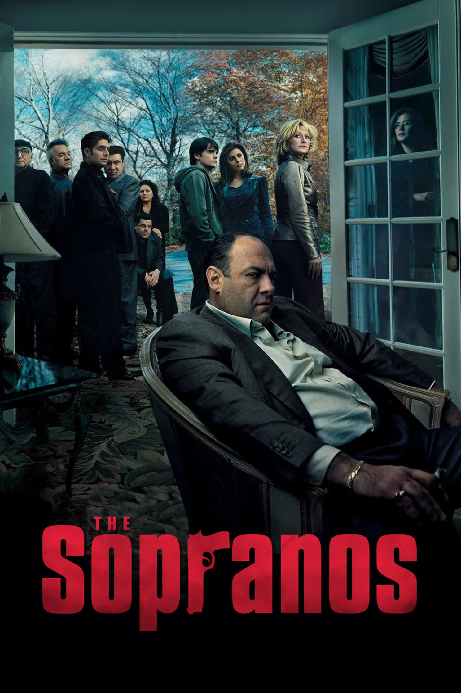
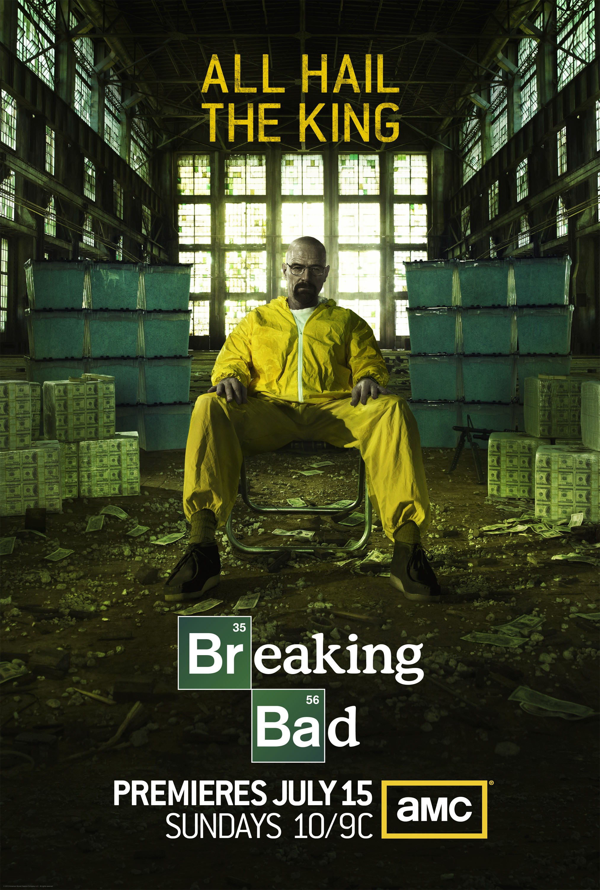
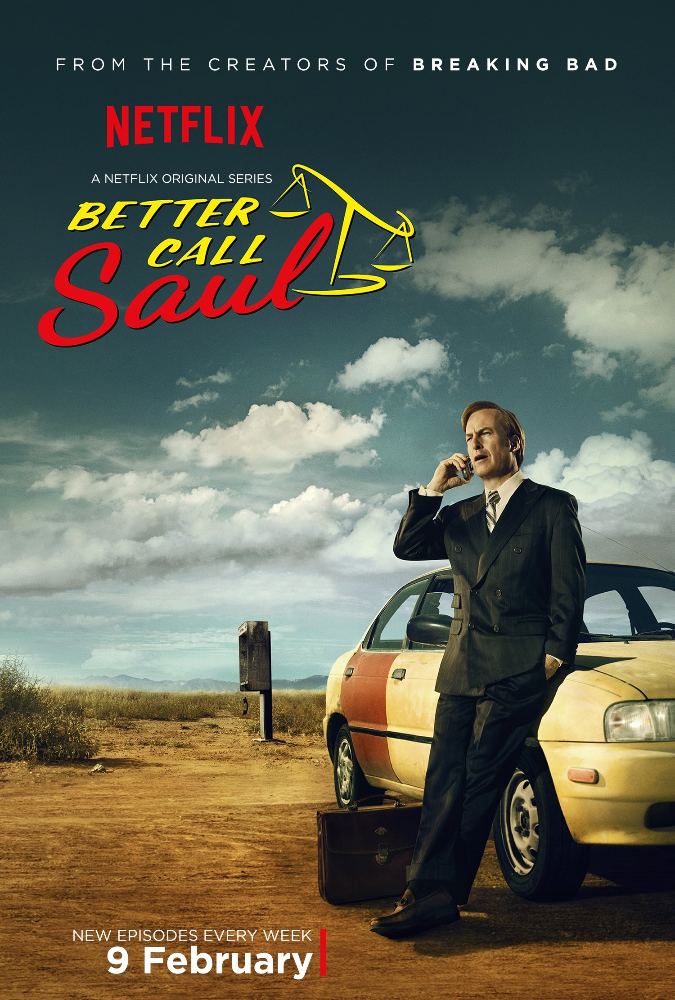
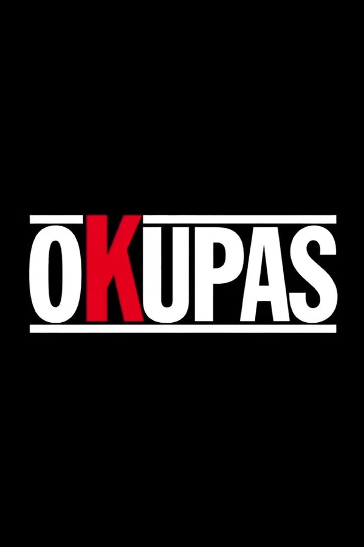
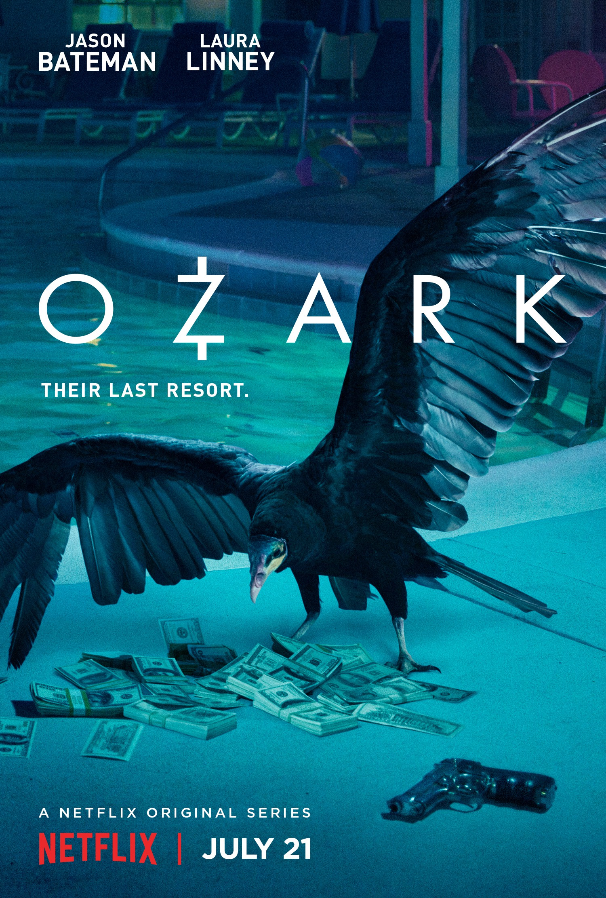

Una historia increíble sobre transformación, poder y consecuencias. Considerada una de las mejores series de todos los tiempos.
Ver Top 5
Drama • Crimen
Tony Soprano, un jefe de la mafia, lucha por equilibrar su vida familiar con su papel criminal.
⭐ IMDb: 9.2/10
📅 Año: 1999-2007
🎬 Director: David Chase
📺 6 Temporadas
"All due respect, you got no fuckin’ idea what it’s like to be Number One."

Drama • Crimen
Walter White, un profesor de química, entra al mundo del narcotráfico tras ser diagnosticado con cáncer.
⭐ IMDb: 9.5/10
📅 Año: 2008-2013
🎬 Creador: Vince Gilligan
📺 5 Temporadas
"Say my name."

Drama • Crimen
Jimmy McGill intenta convertirse en un abogado exitoso mientras poco a poco se transforma en Saul Goodman.
⭐ IMDb: 9.0/10
📅 Año: 2015-2022
🎬 Creadores: Vince Gilligan & Peter Gould
📺 6 Temporadas
"S'all good, man."

Realismo • Drama
Una historia cruda y realista sobre la Argentina de los 2000, donde el crimen y la marginilidad se vuelven protagonistas.
⭐ IMDb: 8.9/10
📅 Año: 2000
🎬 Creador: Bruno Stagnaro
📺 1 Temporada
"Estamos todos medio rotos."

Drama • Crimen
Marty Byrde se muda con su familia a los Ozarks mientras lava dinero para un cartel mexicano.
⭐ IMDb: 8.5/10
📅 Año: 2017-2022
🎬 Creador: Bill Dubuque
📺 4 Temporadas
"Money, at its essence, is that measure of a man's choices."
The Sopranos es una obra maestra que combina drama, humor y personajes complejos. La historia de Tony Soprano y su lucha por equilibrar su vida familiar con su papel como jefe de la mafia es fascinante. La serie explora temas profundos como la identidad, la moralidad y la psicología humana, lo que la convierte en una experiencia única e inolvidable.